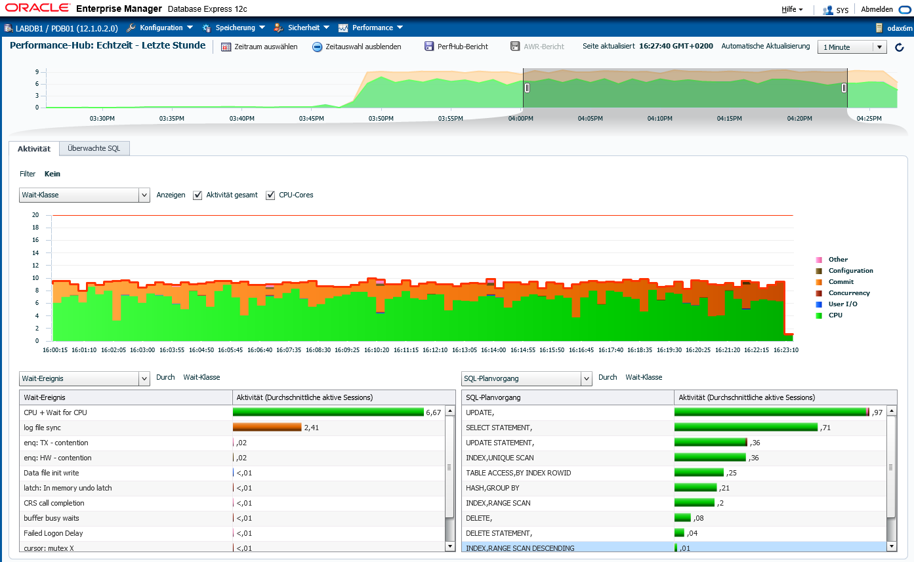

This was first published on https://www.dbi-services.com/blog/oda-x-6-log-file-sync-with-nvme-flash/ (2016-07-21)
Republishing here for new followers. The content is related to the versions available at the publication date.
.
The new ODA X-6 has been announced last month with two smaller configurations and smaller prices: 2S and 2M. Small, but high performance configuration: all SSD, and I/O transfer optimized for Flash with PCIe bus and NVMe protocol. Let’s see how it keeps up with an high OLTP workload. Thanks to Arrow Oracle Authorized Solution Center to let us evaluate performance on their ODA.
Just in case you wonder if Flash is good for writes, and especially for redo, we have run a workload that mainly inserts rows and commit, from 10 sessions without think time.
From the following picture shows a workload all in CPU: OLTP mainly inserts. 
All in CPU and some waits on ‘log file sync’, the commit wait event. At first sight, it seems that those waits are high (30%) and irregular (peaks in transaction rate). But beyond the colors, let’s check the numbers:
Load Profile Per Second Per Transaction Per Exec Per Call
~~~~~~~~~~~~~~~ --------------- --------------- --------- ---------
DB Time(s): 9.5 0.0 0.00 0.00
DB CPU(s): 6.7 0.0 0.00 0.00
Background CPU(s): 0.4 0.0 0.00 0.00
Redo size (bytes): 28,534,906.0 5,647.3
Logical read (blocks): 546,914.9 108.2
Block changes: 167,747.0 33.2
Physical read (blocks): 15.2 0.0
Physical write (blocks): 4,807.8 1.0
Read IO requests: 8.7 0.0
Write IO requests: 2,581.3 0.5
Read IO (MB): 0.1 0.0
Write IO (MB): 37.6 0.0
IM scan rows: 0.0 0.0
Session Logical Read IM:
User calls: 3,881.8 0.8
...
Executes (SQL): 104,409.9 20.7
Rollbacks: 8.5 0.0
Transactions: 5,052.9
5000 transactions per seconds, 30MB/s of redo, that’s not bad. Then are those waits a problem?
Wait Event Histogram DB/Inst: LABDB1/labdb1 Snaps: 75-76
-> Units for Total Waits column: K is 1000, M is 1000000, G is 1000000000
-> % of Waits: value of .0 indicates value was % of Waits: column heading of <=1s is truly 1s is truly >=1024ms
-> Ordered by Event (idle events last)
% of Waits
-----------------------------------------------
Total
Event Waits <1ms <2ms <4ms <8ms <16ms <32ms 1s
------------------------- ------ ----- ----- ----- ----- ----- ----- ----- -----
log file parallel write 4.2M 96.3 1.6 1.5 .3 .2 .0 .0
log file sequential read 25.8K 22.2 22.5 38.2 14.0 2.3 .6 .1
log file single write 22 86.4 9.1 4.5
log file switch (private 73 4.1 75.3 17.8 2.7
log file switch completio 20 100.0
log file sync 3.5M 77.5 10.6 7.8 2.1 1.2 .7 .2
Log file parallel writes are all less than what you can have with spinning disks, and 96% are less than one millisecond.
Log file sync, the only time where a user may wait for an I/O, is mostly less than 8 millisecond. Actually, the average is:
Top 10 Foreground Events by Total Wait Time
~~~~~~~~~~~~~~~~~~~~~~~~~~~~~~~~~~~~~~~~~~~
Total Wait Wait % DB Wait
Event Waits Time (sec) Avg(ms) time Class
------------------------------ ----------- ---------- ---------- ------ --------
DB CPU 9082.7 71.1
log file sync 3,472,568 3487.5 1.00 27.3 Commit
enq: HW - contention 3,169 195 61.55 1.5 Configur
1 millisecond. Even if a application with a very bad design does an hundred of commits per user interaction, the user will not see it.
This is done on a database created as-is with the ODA provisioning interface. Files are on ACFS. ODA is bare metal (no virtualization for 2S and 2M). Redo logs have 512 bytes block size.
This is just a first quick test and it looks promising. This Oracle Database Appliance X6-2M is sold at 24,000 dollars. And the X6-2S at 18,000 dollars has exactly the same storage but only one socket. This is a great opportunity for small customers with few Oracle databases in Enterprise Edition or Standard Edition.
{kind=link}